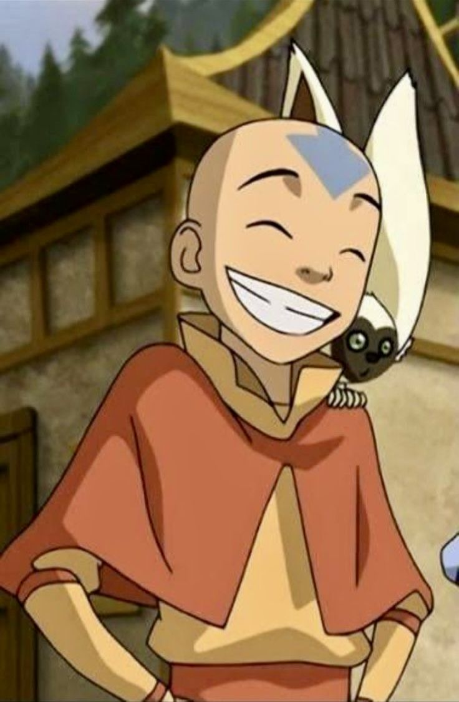
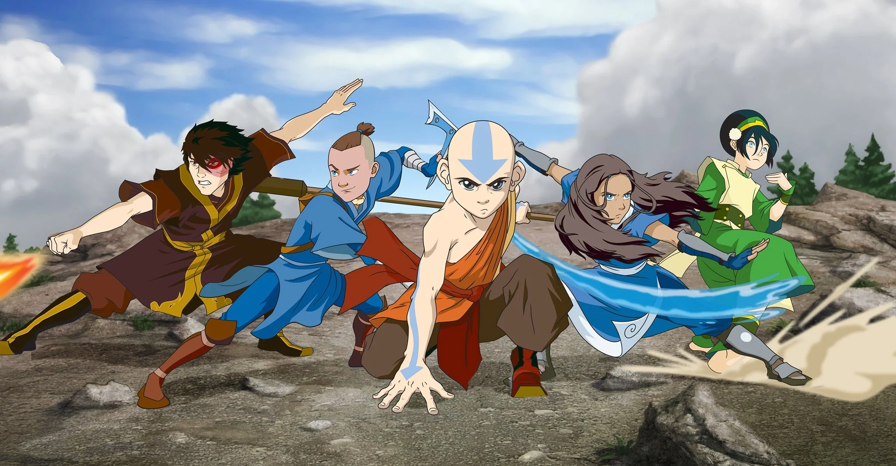
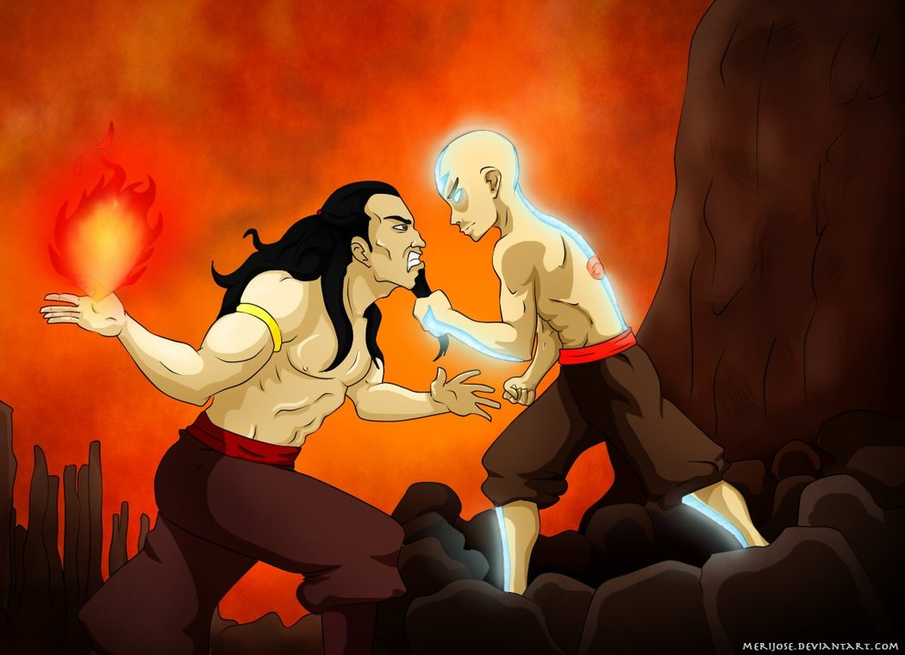
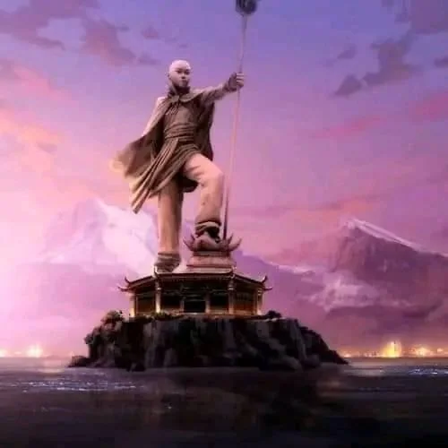

A história de
Aang
Um garoto destinado a dominar os quatro elementos e restaurar o equilíbrio do mundo.
Conheça Aang ↓
Conheça o Aang
Aang não era apenas um garoto comum. Ele era o último dobrador de ar de sua época e carregava sobre os ombros uma das maiores responsabilidades do mundo: ser o Avatar.
Desde muito jovem, Aang descobriu que estava destinado a dominar os quatro elementos — ar, água, terra e fogo — e proteger o equilíbrio entre as diferentes nações.
Mesmo diante de enormes responsabilidades, Aang continuou sendo uma pessoa alegre, gentil e cheia de esperança.


A Equipe Avatar
Aang nunca enfrentou sua jornada sozinho. Durante sua aventura, encontrou pessoas que se tornaram muito mais do que simples companheiros.
Katara
Uma grande amiga que ajudou Aang durante sua jornada.
Sokka
Um companheiro estratégico e essencial para a equipe.
Toph
Uma poderosa dobradora de terra que ensinou Aang a enfrentar seus limites.
Os desafios de Aang
Ser o Avatar não era uma tarefa fácil. Aang precisou aprender a dominar os quatro elementos enquanto enfrentava uma guerra que ameaçava o equilíbrio do mundo.
Além de aprender novas formas de dobra, ele precisou enfrentar seus próprios medos e tomar decisões difíceis.
Cada desafio fez Aang amadurecer e compreender melhor o verdadeiro significado de ser o Avatar.


O legado de Aang
Depois de enfrentar inúmeros desafios, Aang deixou um legado que ultrapassou sua própria geração.
Suas escolhas ajudaram a construir um novo período de paz e equilíbrio entre as diferentes nações.
Aang mostrou que ser forte não significa apenas possuir poder, mas também ter coragem para fazer aquilo que acredita ser correto.
Uma história de coragem
A história de Aang é uma jornada de crescimento, amizade, coragem e esperança.
Ele começou sua aventura como um garoto que desejava apenas ser livre, mas acabou se tornando alguém capaz de carregar o destino de todo um mundo.
O verdadeiro legado de Aang não está apenas em ter dominado os quatro elementos, mas em ter mostrado que mesmo diante das maiores dificuldades, é possível escolher a esperança e lutar por um mundo melhor.
"O equilíbrio começa quando aprendemos a compreender aqueles que são diferentes de nós."
ASSISTA AO ANIME →